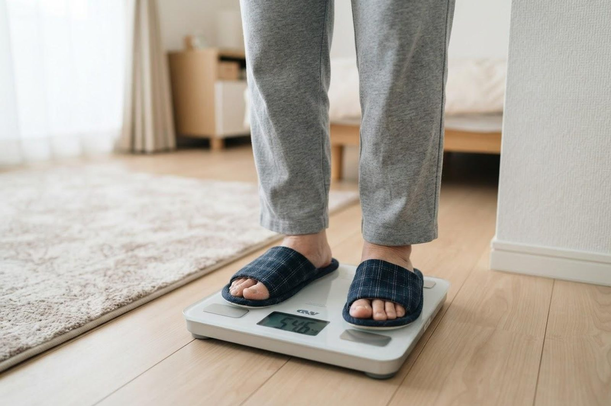

息切れとむくみがあり、横になると苦しくなります。心臓が悪いのでしょうか？
A. 回答息切れと足のむくみは、心不全の患者さんに頻度の多い初期症状とされています。とくにご質問にある「横になると息苦しく、起き上がると楽になる」という変化は起坐呼吸（きざこきゅう）と呼ばれ、体に余分な水分がたまっているときにみられるとされる重要なサインです。あわせて、数日から1週間で体重が2〜3kg増えるようなときも、脂肪ではなく水分がたまっている可能性が考えられます。ただし、同じような症状は肺の病気や腎臓・甲状腺の病気、貧血などでも起こりうるため、自己判断はせず、内科・循環器内科でご相談ください。心臓の状態は、心電図やレントゲン、血液検査などで確かめていくことができます。

息切れ・むくみ・横になると苦しいときに考えられること
心臓が全身に血液を送り出す力が落ちると、血液が肺や足にうっ滞し、息切れやむくみとして現れるとされています。一方で、同じ症状をきたす病気はほかにもあります。
- 心不全：心筋梗塞や狭心症、高血圧、心臓弁膜症、心筋症、不整脈などが背景となって心臓のポンプの働きが低下した状態を指します。坂道や階段での息切れ、足の甲やすねのむくみ、体重の増加、横になれないほどの息苦しさなどがみられるとされています。
- 肺の病気：慢性閉塞性肺疾患（COPD）や気管支ぜんそくなどでも、労作時の息切れや夜間・早朝の呼吸の苦しさが起こることがあります。
- 腎臓の病気：腎臓の働きが低下すると余分な水分や塩分を排出しにくくなり、むくみや息苦しさにつながる場合があります。
- 甲状腺の機能の異常・貧血：全身のだるさや動悸を伴い、息切れやむくみとして自覚されることがあります。
- 睡眠時無呼吸：夜間の呼吸の乱れから、夜中に息苦しくて目が覚める、日中に強い眠気が出るといったことがあります。
これらは重なって存在することもあり、症状だけで見分けることは困難です。「年のせい」「太ったせい」と決めつけず、一度検査で確かめておくことをおすすめします。
心不全で見逃したくない3つのサイン
心不全では、体に水分がたまってくる過程で次のような変化がみられるとされています。ご自身やご家族で気づける手がかりです。
- 1. 横になると息苦しく、起き上がると楽になる（起坐呼吸）：横になると肺に血液がたまりやすくなり、座ると軽くなる傾向があるとされています。「枕を高くしないと眠れない」「夜中に息苦しくて目が覚め、起き上がると落ち着く」は、そのままにしないでいただきたい変化です。
- 2. 数日で体重が2〜3kg増える：短期間の体重増加は、体内に水分がたまっているサインとされています。国立循環器病研究センターの解説でも、1週間で2〜3キロ増加することがあると説明されています。
- 3. 足の甲やすねのむくみ、靴がきつくなる：夕方に強くなり、指で押すとへこんで戻りにくいむくみが続くときは注意が必要です。おなかが張る、食欲が落ちるといった形で現れることもあります。
受診の目安
心不全は、悪化のきざしに早く気づいて対応することが大切だとされています。
判断に迷われるときは、救急安心センター事業「＃7119」（岡山県内で利用できます）にご相談いただけます。総務省消防庁の「全国版救急受診アプリ（Q助）」も目安になります。
すぐに受診を検討してください
- 安静にしていても強い息苦しさがある、ピンク色の泡のような痰が出る：肺に急激に水分がたまった状態の可能性があるとされ、ためらわず救急要請（119番）をご検討ください
- 座っていないと息ができない、話すのがつらいほど呼吸が速い
- 唇や指先が紫っぽい、冷や汗が出ている、意識がぼんやりする
- 胸の強い痛みや締めつけられる感じを伴う
- 夜中に息苦しくて何度も目が覚める状態が続いている
- 数日で体重が急に増え、むくみが急速に強くなってきた
早めの受診をおすすめします
- 以前は平気だった坂道や階段で息が切れるようになった
- 足のむくみが朝まで残る日が続いている、靴や靴下の跡が強く残る
- 枕を高くしたほうが眠りやすくなってきた
- 体重が1週間で2kg以上増えた
- 疲れやすい、食欲が落ちた、おなかが張る感じが続く
- 高血圧・糖尿病・不整脈・心筋梗塞や狭心症の既往がある
- 健診で心電図や胸部レントゲンの異常を指摘されたことがある
ご家庭での毎日のセルフチェック
心臓の状態は日々変化します。とくに毎日の体重測定は、ご自身で体の水分のたまり具合に気づくための、簡単で有用な方法とされています。
毎日つけておきたい記録・気をつけたいこと
- 体重：毎朝、起きてトイレを済ませたあと、同じ服装・同じ体重計で測って記録する
- 血圧と脈：決まった時間に測り、数値を書き留めておく
- むくみ：すねを指で5秒ほど押して、へこみが残らないか確かめる
- 息切れ：昨日と同じ動作で息が切れやすくなっていないか振り返る
- 眠るときの姿勢：枕の高さを上げないと苦しくないか確認する
- 塩分：味付けの濃いもの、汁物や漬物、加工食品のとりすぎに注意する（国立循環器病研究センターは1日6g未満を目途とした塩分制限を挙げています）
- お薬：調子がよくても自己判断で中止せず、飲み忘れがないか確認する
記録はノートでもスマートフォンのメモでもかまいません。受診の際にお持ちいただくと、経過を把握するうえで大きな助けになります。
当院での対応
いなだ医院は内科・循環器内科を標榜しており、息切れ・むくみ・動悸などのご相談をお受けしています。診察ではまず、いつからどんなときに息切れが出るか、むくみや体重の変化、これまでの持病やお薬などをうかがい、血圧・脈拍・酸素飽和度の測定と、心臓や肺の音の聴診を行います。そのうえで必要と判断した場合には、心電図、胸部レントゲン撮影、血液検査、尿検査などで、心臓の負担や腎臓・甲状腺の働き、貧血の有無などを確認していきます。
ご予約なしで当日受診いただけます。心電図の記録は数分程度、レントゲン撮影もあわせて短時間で行えますが、混雑状況により待ち時間が生じますのでご了承ください。診察・検査はいずれも保険診療の対象となります。費用の詳細はお電話でお問い合わせください。受診の際は、保険証（またはマイナ保険証）、お薬手帳、健診結果、ご家庭で記録された血圧・体重のメモをお持ちいただくとスムーズです。
心臓超音波検査や入院での精密検査、専門的な治療が望ましいと判断した場合には、地域の医療機関へのご紹介を行っています。また当院は訪問診療・訪問看護も行っており、通院が難しい方の在宅での療養についてもご相談いただけます。朝7時から診療しておりますので、お仕事前の時間帯もご利用いただけます。
受診時に伝えていただきたいこと
- いつから息切れやむくみが出てきたか、少しずつか急にか
- どのくらいの動作で息が切れるか（平地を歩く、階段を1階分など具体的に）
- 横になったときの苦しさ、枕の高さの変化、夜中に目が覚めるか
- ここ1〜2週間の体重の変化（数値がわかれば正確に）
- むくみの場所と左右差、指で押したときのへこみ方
- 動悸・胸の痛み・尿量の変化など、ほかに気になる症状
- これまでの持病（高血圧、糖尿病、不整脈、心筋梗塞・狭心症など）と服用中のお薬（お薬手帳をお持ちください）
参考にした情報
息切れ・むくみ・横になると苦しい——心臓からのサインかもしれません。気になるときは早めにご相談ください。
最終更新：2026年8月26日